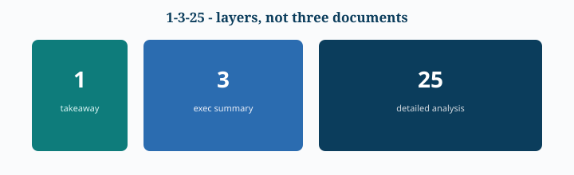

Part VII — Written Reports
7.1 Why Written Reports Matter
التقرير المكتوب هو وسيلة لتحويل التحليل إلى وثيقة يمكن مراجعتها، مشاركتها، الرجوع إليها، والتحقق من منطقها.
7.2 Types of Reports
| Type | Main purpose | Typical content | Best audience |
|---|---|---|---|
| Informational | Inform | Facts, status, descriptive information | Anyone who needs factual updates |
| Analytical | Support a decision | Analysis, relationships, findings, recommendations | Decision-makers + stakeholders |
| Final | Preserve the complete analysis | Detailed methods, data, results, visuals, limitations | Technical / expert readers |
| Summary | Deliver the decision-relevant essence | Key findings, implications, recommendations, selected visuals | Executives / busy stakeholders |
Decision Rule
- What happened? → Informational.
- What happened, why, and what should we do? → Analytical.
- يحتاج كل التفاصيل للتحقق → Final.
- يحتاج القرار والـ key findings بسرعة → Summary.
7.3 Standard Report Structure
Introduction ↓ Purpose + Context + Analysis Questions ↓ Data ↓ Method ↓ Analysis ↓ Results / Key Findings ↓ Conclusion ↓ Recommendations / Next Steps- Introduction: Purpose, Context, Analysis questions.
- Data: المصدر، النطاق، أهم المتغيرات، وأي قيود مؤثرة.
- Method: كيف جُمعت البيانات وكيف تم تحليلها أو نمذجتها.
- Analysis: الأدلة المختارة فقط.
- Results: فسّر ماذا تعني النتائج.
- Conclusion: ربط النتائج بالأسئلة + recommendations + next steps.
7.4 The 1–3–25 Business Reporting Rule
- 1 page: Abstract / high-level takeaway.
- 3 pages max: Executive Summary.
- 25 pages max: Detailed analysis.


7.5 Audience-Specific Reading Behavior
- Busy interested stakeholder: introduction + conclusion ثم scan.
- Executive team: purpose + conclusion + recommendations.
- Technical stakeholder: body + methods + assumptions + validation.
7.6 Writing Precise & Clear Reports
يجب أن يكون الكتابة: Precise + Concise + Concrete + Unambiguous.
Remove Empty Phrases
احذف: "It is interesting to note that...", "The fact that...", "It should be pointed out that..." بدلًا من: "It is interesting to note that sales increased by 20%." اكتب: "Sales increased by 20%."
Prefer Concrete Nouns
❌ "This shows an accuracy of 80%." ✅ "The model achieved 80% accuracy."
Active vs Passive Voice
❌ "The report was prepared by the analytics team." ✅ "The analytics team prepared the report." الهدف clarity وليس قاعدة نحوية مطلقة.
Avoid Run-On Sentences
❌ "Sales fell, customer complaints increased." ✅ "Sales fell, and customer complaints increased."
7.7 References & Citations
Citation purpose: تمكين القارئ من تحديد المصدر والوصول إليه. APA من أشهر الأساليب. في بيئة الأعمال غالبًا يكفي hyperlink واضح.